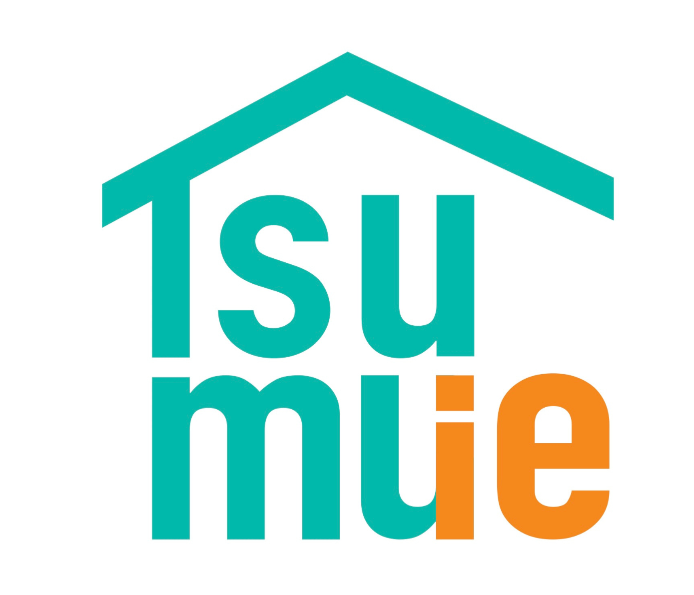
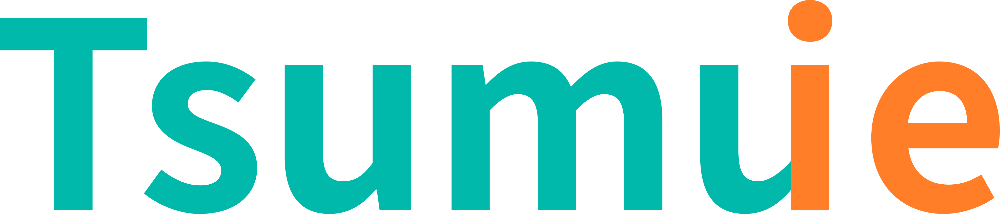
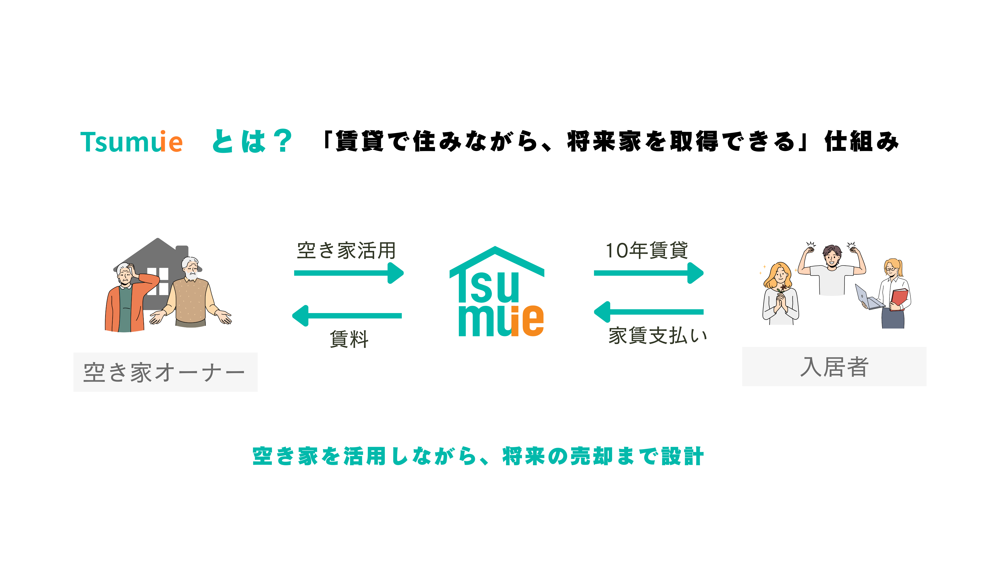

LINE相談賃貸×将来取得の、新しい空き家活用。

一覧住まいを探している方も、空き家を活かしたい方も。
気になる方から、物件一覧で詳しくご覧いただけます。

大切な空き家が、賃料収入を生みながら、
次の世代に受け継がれていく
——そんな新しい選択肢があります。
01
長期の入居を前提にした仕組みなので、次の入居者探しに追われる心配がぐっと減ります。入居が決まれば、10〜15年は安定した運用が続きます。
02
契約を結んだ時点で、その家の10〜15年後の姿まで見えている。将来の使い道に迷い続ける必要がありません。
03
建物の状態や入居者の希望に合わせてリフォームするので、古くなった空き家が新しい表情を取り戻します。一級建築士が物件を見るところから伴走します。
04
持て余していた空き家が、賃料の一部還元というかたちで、きちんと収益を生む資産に変わります。固定資産税の負担も解消されます。
子どもの声が聞こえてくる。
庭に小さな花が植えられる。
玄関先にカフェの看板が出る。
10年後、そこで育った子どもが
「ここが私の家だよ」と友達に紹介している。
こんな方々がTsumuie物件を必要としています。
サロンの部屋を賃貸で借りて経営しているが、自宅兼店舗にしたい。家賃は払えるのに個人事業主ということで住宅ローン審査が通りにくい。ペット可・店舗可で広いリビングのある物件がなかなか見つからず、Tsumuieに可能性を感じています。
払い続ける家賃が勿体ないと感じています。子育て環境の整ったエリアで家族が長く安心して住める家を探しており、Tsumuieのモデルに希望を見出しています。
まずはお家の状態やご希望をお聞かせください。オンラインで完結できます。
入居者との契約が成立し、新生活がスタートします。
入居者さんが住みながら、好みの家へリフォームし、育てていきます。
契約期間の終わりに、家は入居者のものになります。売却先が最初から決まっている安心感。
対応エリアは兵庫・大阪・京都・奈良・滋賀・和歌山の関西一円。
遠方にお住まいのオーナー様もオンラインで完結できます。
大阪市・神戸市・京都市など関西主要都市の空き家活用・空き家相続のご相談に対応しています。
実家が空き家になっている、
相続した家をどうするか悩んでいる、
管理が大変、なかなか売れない
——そんな方こそ、一度Tsumuieの話を聞いてみてください。
住まい方の分だけ、家の物語も広がっていきます。
はい。入居時はローン審査不要です。「定期借家契約＋将来譲渡予約契約」の2契約で成り立つ仕組みで、賃料を支払いながら将来の取得権を確保します。10〜15年後の取得時にローンを使う場合は改めて審査が必要ですが、その時点では信用実績が積み上がっていることが多く、審査通過率が上がるケースも多いです。
はい。Tsumuieは住宅ローン審査を前提としていないため、自営業・フリーランス・個人事業主の方も多くご相談いただいています。収入の状況や生活環境をヒアリングしながら柔軟に対応します。
物件によります。Tsumuieはオーナーと入居者が直接条件を調整できる仕組みのため、通常の賃貸より柔軟です。ペット可・大型犬・店舗利用などについてはまずLINEでご相談ください。
入居時に締結する「将来譲渡予約契約」の中で、取得価格・時期・条件が明記されます。10〜15年後の不動産市場の動向に左右されず、双方が納得した条件で進められるのがTsumuieの特徴です。
毎月の賃料収入が得られる、売却先・価格が最初から決まる、管理はTsumuieが担う、入居者が大切に使ってくれる——という4つが主なメリットです。詳しくはオーナー向けページをご覧ください。
初回相談は無料です。マッチング・契約設計のサポート費用は物件・条件によって異なります。相談時に明確にご説明しますので、まずはLINEでお気軽にご連絡ください。
株式会社SOTTO 代表取締役
増田 早紀（Saki Masuda）
公務員として建築・不動産の現場で経験を積んできました。
「挑戦する人を支えたい」
という想いを胸に、独立。
眠ったままの空き家も、視点を変えれば
誰かの挑戦を支える舞台になります。
一級建築士×宅建士×大家の経験を活かし、
賃貸として貸しながら、
いずれ住み手に引き継いでいく
——そんな新しい活用のかたち
「Tsumuie」を展開しています。
空き家を、次の誰かの一歩につないでいきます。